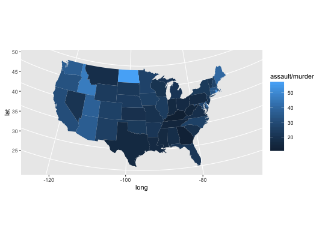

map_data(map, region = ".", exact = FALSE, ...)
county, france,
italy, nz,
state, usa,
world, world2.. which
includes all subregion. See documentation for map
for more details.region be treated as a regular expression
(FALSE) or as a fixed string (TRUE).mapCreate a data frame of map data.
if (require("maps")) { states <- map_data("state") arrests <- USArrests names(arrests) <- tolower(names(arrests)) arrests$region <- tolower(rownames(USArrests)) choro <- merge(states, arrests, sort = FALSE, by = "region") choro <- choro[order(choro$order), ] ggplot(choro, aes(long, lat)) + geom_polygon(aes(group = group, fill = assault)) + coord_map("albers", at0 = 45.5, lat1 = 29.5) ggplot(choro, aes(long, lat)) + geom_polygon(aes(group = group, fill = assault / murder)) + coord_map("albers", at0 = 45.5, lat1 = 29.5) }